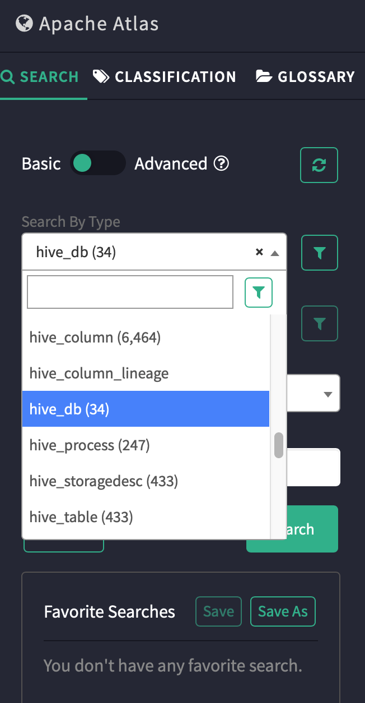

Atlas导入hive元数据
首先要有HIVE_HOME环境变量，
如果是apache，直接配置为解压目录；如果是CDH，设置如下：
# export HIVE_HOME=/opt/cloudera/parcels/CDH-5.16.1-1.cdh5.16.1.p0.3/lib/hive
执行导入
# bin/import-hive.sh
...
Failed to import Hive Meta Data!!!
报错，查看日志
# more logs/import-hive.log 2020-01-11 14:42:38,951 INFO - [main:] ~ Looking for atlas-application.properties in classpath (ApplicationProperties:110) 2020-01-11 14:42:38,955 INFO - [main:] ~ Looking for /atlas-application.properties in classpath (ApplicationProperties:115) 2020-01-11 14:42:38,956 INFO - [main:] ~ Loading atlas-application.properties from null (ApplicationProperties:123) 2020-01-11 14:42:38,984 ERROR - [main:] ~ Import failed (HiveMetaStoreBridge:176) org.apache.atlas.AtlasException: Failed to load application properties at org.apache.atlas.ApplicationProperties.get(ApplicationProperties.java:134) at org.apache.atlas.ApplicationProperties.get(ApplicationProperties.java:86) at org.apache.atlas.hive.bridge.HiveMetaStoreBridge.main(HiveMetaStoreBridge.java:120) Caused by: org.apache.commons.configuration.ConfigurationException: Cannot locate configuration source null at org.apache.commons.configuration.AbstractFileConfiguration.load(AbstractFileConfiguration.java:259) at org.apache.commons.configuration.AbstractFileConfiguration.load(AbstractFileConfiguration.java:238) at org.apache.commons.configuration.AbstractFileConfiguration.<init>(AbstractFileConfiguration.java:197) at org.apache.commons.configuration.PropertiesConfiguration.<init>(PropertiesConfiguration.java:284) at org.apache.atlas.ApplicationProperties.<init>(ApplicationProperties.java:69) at org.apache.atlas.ApplicationProperties.get(ApplicationProperties.java:125) ... 2 more
提示找不到atlas-application.properties，将其拷贝到hive conf目录
# cp conf/atlas-application.properties /etc/hive/conf/
再次执行
# bin/import-hive.sh ... Enter username for atlas :- admin Enter password for atlas :- Exception in thread "main" java.lang.NoClassDefFoundError: com/fasterxml/jackson/jaxrs/json/JacksonJaxbJsonProvider at org.apache.atlas.AtlasBaseClient.getClient(AtlasBaseClient.java:270) at org.apache.atlas.AtlasBaseClient.initializeState(AtlasBaseClient.java:453) at org.apache.atlas.AtlasBaseClient.initializeState(AtlasBaseClient.java:448) at org.apache.atlas.AtlasBaseClient.<init>(AtlasBaseClient.java:132) at org.apache.atlas.AtlasClientV2.<init>(AtlasClientV2.java:82) at org.apache.atlas.hive.bridge.HiveMetaStoreBridge.main(HiveMetaStoreBridge.java:131) Caused by: java.lang.ClassNotFoundException: com.fasterxml.jackson.jaxrs.json.JacksonJaxbJsonProvider at java.net.URLClassLoader.findClass(URLClassLoader.java:381) at java.lang.ClassLoader.loadClass(ClassLoader.java:424) at sun.misc.Launcher$AppClassLoader.loadClass(Launcher.java:335) at java.lang.ClassLoader.loadClass(ClassLoader.java:357) ... 6 more Failed to import Hive Meta Data!!!
还是报错，提示找不到类，从server目录下拷贝到hook/hive目录下
# cp server/webapp/atlas/WEB-INF/lib/jackson-jaxrs-1.8.3.jar hook/hive/atlas-hive-plugin-impl/ # cp server/webapp/atlas/WEB-INF/lib/jackson-jaxrs-json-provider-2.9.2.jar hook/hive/atlas-hive-plugin-impl/ # cp server/webapp/atlas/WEB-INF/lib/jackson-module-jaxb-annotations-2.9.8.jar hook/hive/atlas-hive-plugin-impl/
再次执行成功，到atlas里可以看到hive相关数据

导入成功